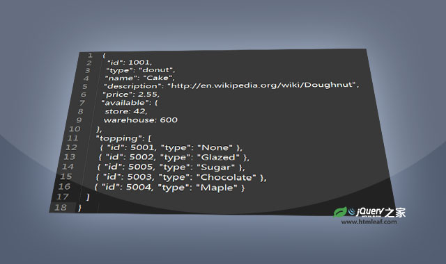
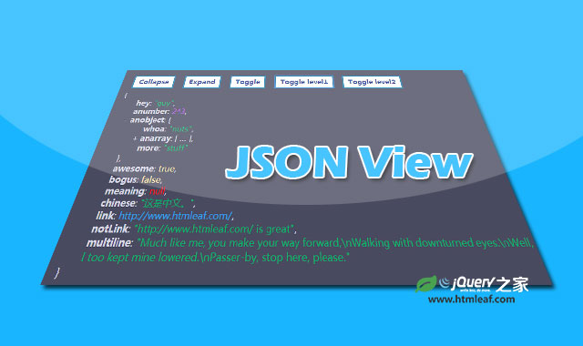

json格式数据查看和编辑jQuery插件
A json editor based on jquery.json-viewer
jQuery之家
返回下载页
在
textarea
中输入
JSON
，点击
Translate To HTML
按钮更新编辑器
编辑
JSON
时应遵循
JSON 格式规范
在控制台中使用
editor.get()
获取当前的
JSON
值
{ "id": 1001, "type": "donut", "name": "Cake", "description": "http://en.wikipedia.org/wiki/Doughnut", "price": 2.55, "available": { "store": 42, "warehouse": 600 }, "topping": [ { "id": 5001, "type": "None" }, { "id": 5002, "type": "Glazed" }, { "id": 5005, "type": "Sugar" }, { "id": 5003, "type": "Chocolate" }, { "id": 5004, "type": "Maple" } ] }
Translate To HTML
如果你喜欢这个插件，那么你可能也喜欢:

jQuery查看json格式数据插件

jQuery jsonView-格式化和语法高亮json格式数据查看插件